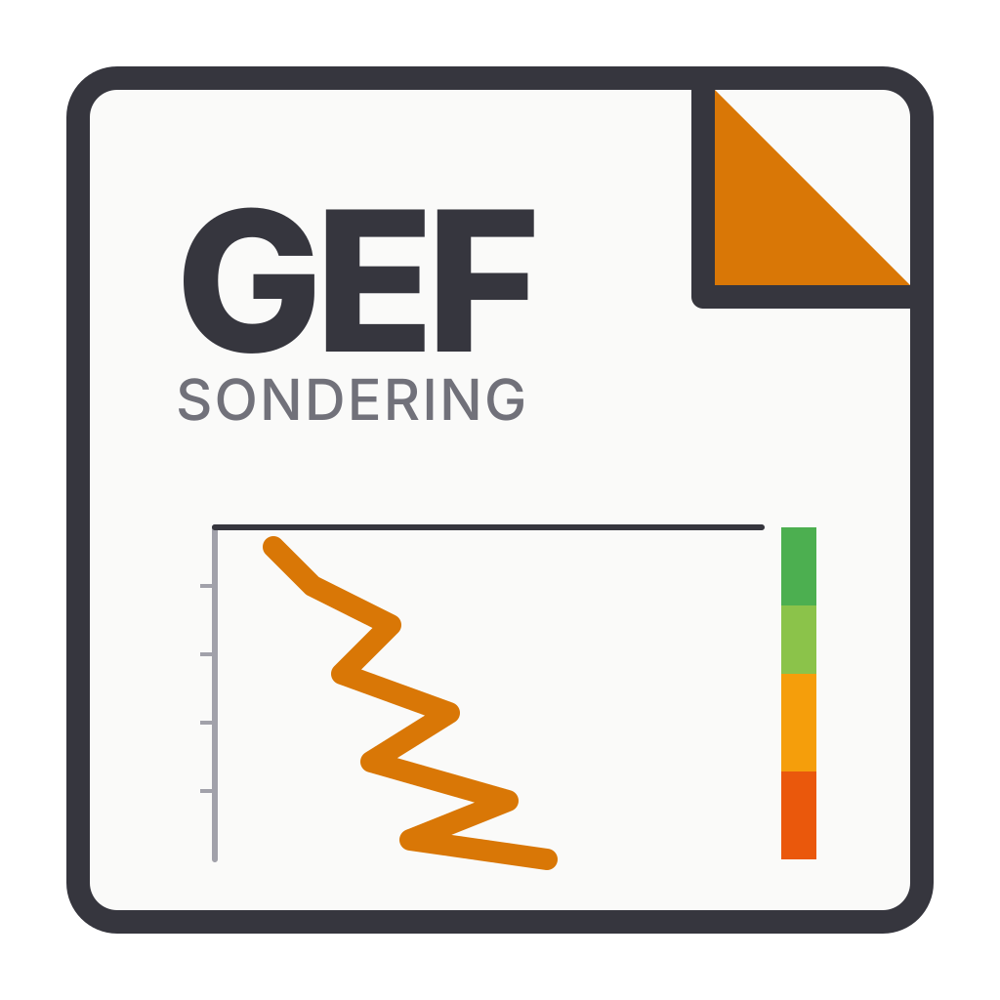
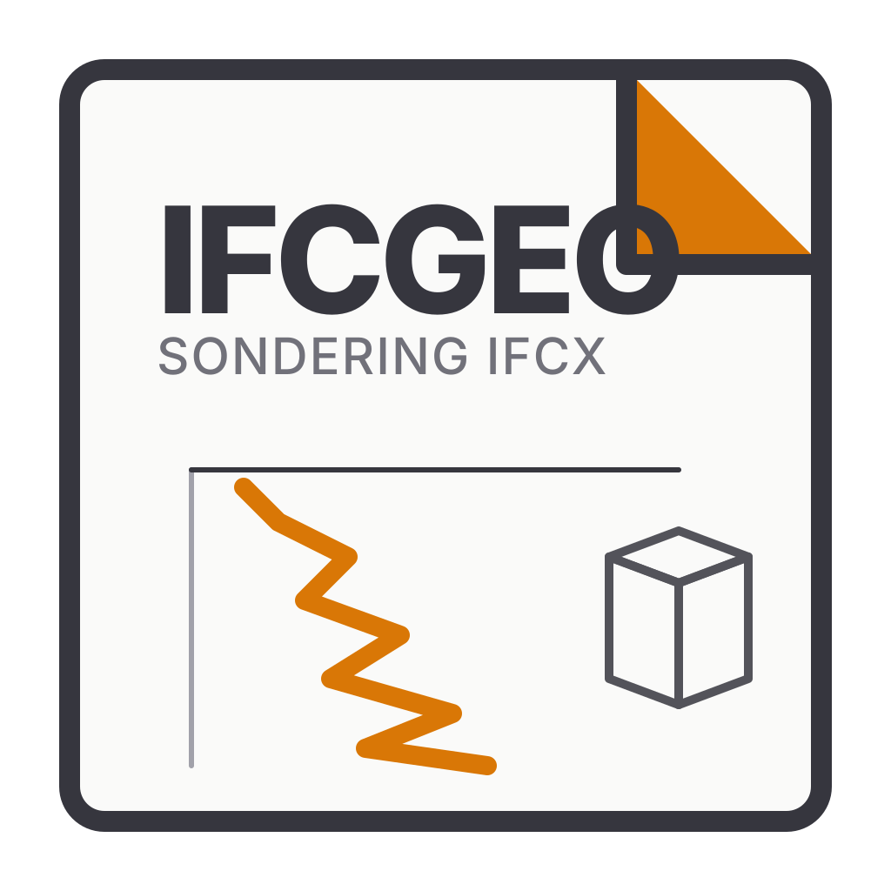
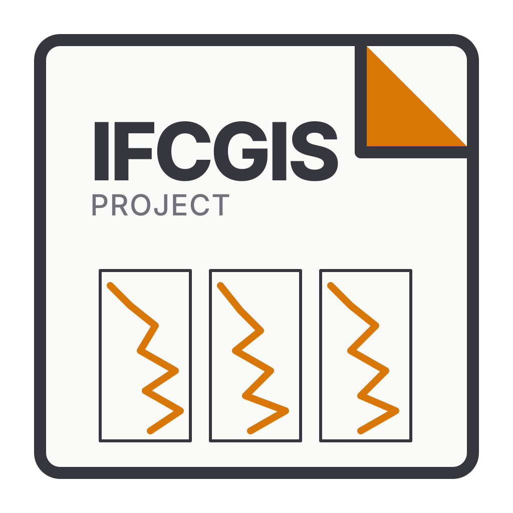
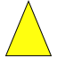
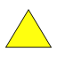
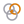
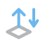

16 px24 px32 pxdonkerBestandstype-illustratie in public/file-icons; geen directe bestandsverwijzing in de gescande UI-code.
Bronbestand ↗
apps/desktop/public/file-icons/gef.svgDeze bestanden lijken door hun pad of vorm op iconen, maar de gepinde codeaudit bewijst geen direct gebruik in de UI. Ze zijn apart van de 577 bewezen bestanden beschikbaar voor visuele en runtimebeoordeling.
assets/icons of een meegeleverde PDF.js-beeldmap is niet automatisch een gebruikte knop. De lichte en donkere proef toont de originele SVG zonder thematische correctie. De OpenCADStudio-referentie is extern aan de OpenAEC-organisatie. Open de bewezen UI-iconenreview.
16 px24 px32 pxdonkerBestandstype-illustratie in public/file-icons; geen directe bestandsverwijzing in de gescande UI-code.
Bronbestand ↗apps/desktop/public/file-icons/gef.svg
16 px24 px32 pxdonkerBestandstype-illustratie in public/file-icons; geen directe bestandsverwijzing in de gescande UI-code.
Bronbestand ↗apps/desktop/public/file-icons/ifcgeo.svg
16 px24 px32 pxdonkerBestandstype-illustratie in public/file-icons; geen directe bestandsverwijzing in de gescande UI-code.
Bronbestand ↗apps/desktop/public/file-icons/ifcgis.svgMeegeleverd met PDF.js; geen directe bestandsverwijzing in viewer.html, viewer.css of viewer.mjs. Dynamisch laden blijft mogelijk.
Bronbestand ↗open-pdf-studio/public/pdfjs/web/images/annotation-check.svgMeegeleverd met PDF.js; geen directe bestandsverwijzing in viewer.html, viewer.css of viewer.mjs. Dynamisch laden blijft mogelijk.
Bronbestand ↗open-pdf-studio/public/pdfjs/web/images/annotation-comment.svgMeegeleverd met PDF.js; geen directe bestandsverwijzing in viewer.html, viewer.css of viewer.mjs. Dynamisch laden blijft mogelijk.
Bronbestand ↗open-pdf-studio/public/pdfjs/web/images/annotation-help.svg
16 px24 px32 pxdonkerMeegeleverd met PDF.js; geen directe bestandsverwijzing in viewer.html, viewer.css of viewer.mjs. Dynamisch laden blijft mogelijk.
Bronbestand ↗open-pdf-studio/public/pdfjs/web/images/annotation-insert.svgMeegeleverd met PDF.js; geen directe bestandsverwijzing in viewer.html, viewer.css of viewer.mjs. Dynamisch laden blijft mogelijk.
Bronbestand ↗open-pdf-studio/public/pdfjs/web/images/annotation-key.svg
16 px24 px32 pxdonkerMeegeleverd met PDF.js; geen directe bestandsverwijzing in viewer.html, viewer.css of viewer.mjs. Dynamisch laden blijft mogelijk.
Bronbestand ↗open-pdf-studio/public/pdfjs/web/images/annotation-newparagraph.svgMeegeleverd met PDF.js; geen directe bestandsverwijzing in viewer.html, viewer.css of viewer.mjs. Dynamisch laden blijft mogelijk.
Bronbestand ↗open-pdf-studio/public/pdfjs/web/images/annotation-noicon.svgMeegeleverd met PDF.js; geen directe bestandsverwijzing in viewer.html, viewer.css of viewer.mjs. Dynamisch laden blijft mogelijk.
Bronbestand ↗open-pdf-studio/public/pdfjs/web/images/annotation-note.svgMeegeleverd met PDF.js; geen directe bestandsverwijzing in viewer.html, viewer.css of viewer.mjs. Dynamisch laden blijft mogelijk.
Bronbestand ↗open-pdf-studio/public/pdfjs/web/images/annotation-paperclip.svgMeegeleverd met PDF.js; geen directe bestandsverwijzing in viewer.html, viewer.css of viewer.mjs. Dynamisch laden blijft mogelijk.
Bronbestand ↗open-pdf-studio/public/pdfjs/web/images/annotation-paragraph.svgMeegeleverd met PDF.js; geen directe bestandsverwijzing in viewer.html, viewer.css of viewer.mjs. Dynamisch laden blijft mogelijk.
Bronbestand ↗open-pdf-studio/public/pdfjs/web/images/annotation-pushpin.svgMeegeleverd met PDF.js; geen directe bestandsverwijzing in viewer.html, viewer.css of viewer.mjs. Dynamisch laden blijft mogelijk.
Bronbestand ↗open-pdf-studio/public/pdfjs/web/images/gv-toolbarButton-download.svgMeegeleverd met PDF.js; geen directe bestandsverwijzing in viewer.html, viewer.css of viewer.mjs. Dynamisch laden blijft mogelijk.
Bronbestand ↗open-pdf-studio/public/pdfjs/web/images/gv-toolbarButton-openinapp.svgBronbestand in de native iconmap; in de gepinde UI-code geen directe bestandsverwijzing gevonden.
Bronbestand ↗native/assets/opencad-icons/color_classification.svgBronbestand in de native iconmap; in de gepinde UI-code geen directe bestandsverwijzing gevonden.
Bronbestand ↗native/assets/opencad-icons/color_elevation.svgBronbestand in de native iconmap; in de gepinde UI-code geen directe bestandsverwijzing gevonden.
Bronbestand ↗native/assets/opencad-icons/color_intensity.svg
16 px24 px32 pxdonkerBronbestand in de native iconmap; in de gepinde UI-code geen directe bestandsverwijzing gevonden.
Bronbestand ↗native/assets/opencad-icons/color_rgb.svgBronbestand in de native iconmap; in de gepinde UI-code geen directe bestandsverwijzing gevonden.
Bronbestand ↗native/assets/opencad-icons/eye_dome.svgBronbestand in de native iconmap; in de gepinde UI-code geen directe bestandsverwijzing gevonden.
Bronbestand ↗native/assets/opencad-icons/file_import.svgBronbestand in de native iconmap; in de gepinde UI-code geen directe bestandsverwijzing gevonden.
Bronbestand ↗native/assets/opencad-icons/fit_stations.svgBronbestand in de native iconmap; in de gepinde UI-code geen directe bestandsverwijzing gevonden.
Bronbestand ↗native/assets/opencad-icons/folder_import.svgBronbestand in de native iconmap; in de gepinde UI-code geen directe bestandsverwijzing gevonden.
Bronbestand ↗native/assets/opencad-icons/ribbon_fit_arrows.svgBronbestand in de native iconmap; in de gepinde UI-code geen directe bestandsverwijzing gevonden.
Bronbestand ↗native/assets/opencad-icons/scan_positions.svgArchief-icoon zonder directe verwijzing in de gescande UI-bron; zichtbaarheid niet bewezen.
Bronbestand ↗assets/icons/arc/arc.svgArchief-icoon zonder directe verwijzing in de gescande UI-bron; zichtbaarheid niet bewezen.
Bronbestand ↗assets/icons/circle/circle.svgArchief-icoon zonder directe verwijzing in de gescande UI-bron; zichtbaarheid niet bewezen.
Bronbestand ↗assets/icons/cone3d.svgArchief-icoon zonder directe verwijzing in de gescande UI-bron; zichtbaarheid niet bewezen.
Bronbestand ↗assets/icons/dim_style.svgArchief-icoon zonder directe verwijzing in de gescande UI-bron; zichtbaarheid niet bewezen.
Bronbestand ↗assets/icons/distance.svgArchief-icoon zonder directe verwijzing in de gescande UI-bron; zichtbaarheid niet bewezen.
Bronbestand ↗assets/icons/ellipse.svgArchief-icoon zonder directe verwijzing in de gescande UI-bron; zichtbaarheid niet bewezen.
Bronbestand ↗assets/icons/extrude.svgArchief-icoon zonder directe verwijzing in de gescande UI-bron; zichtbaarheid niet bewezen.
Bronbestand ↗assets/icons/hatch/hatch_cross.svgArchief-icoon zonder directe verwijzing in de gescande UI-bron; zichtbaarheid niet bewezen.
Bronbestand ↗assets/icons/intersect.svgArchief-icoon zonder directe verwijzing in de gescande UI-bron; zichtbaarheid niet bewezen.
Bronbestand ↗assets/icons/loft.svgArchief-icoon zonder directe verwijzing in de gescande UI-bron; zichtbaarheid niet bewezen.
Bronbestand ↗assets/icons/modify_overkill.svgArchief-icoon zonder directe verwijzing in de gescande UI-bron; zichtbaarheid niet bewezen.
Bronbestand ↗assets/icons/mview_block.svgArchief-icoon zonder directe verwijzing in de gescande UI-bron; zichtbaarheid niet bewezen.
Bronbestand ↗assets/icons/polysolid.svg
16 px24 px32 pxdonkerArchief-icoon zonder directe verwijzing in de gescande UI-bron; zichtbaarheid niet bewezen.
Bronbestand ↗assets/icons/presspull.svgArchief-icoon zonder directe verwijzing in de gescande UI-bron; zichtbaarheid niet bewezen.
Bronbestand ↗assets/icons/pyramid3d.svgArchief-icoon zonder directe verwijzing in de gescande UI-bron; zichtbaarheid niet bewezen.
Bronbestand ↗assets/icons/revolve.svgArchief-icoon zonder directe verwijzing in de gescande UI-bron; zichtbaarheid niet bewezen.
Bronbestand ↗assets/icons/subtract.svgArchief-icoon zonder directe verwijzing in de gescande UI-bron; zichtbaarheid niet bewezen.
Bronbestand ↗assets/icons/sweep.svgArchief-icoon zonder directe verwijzing in de gescande UI-bron; zichtbaarheid niet bewezen.
Bronbestand ↗assets/icons/text_style.svgArchief-icoon zonder directe verwijzing in de gescande UI-bron; zichtbaarheid niet bewezen.
Bronbestand ↗assets/icons/torus3d.svgArchief-icoon zonder directe verwijzing in de gescande UI-bron; zichtbaarheid niet bewezen.
Bronbestand ↗assets/icons/ui/bolt.svgArchief-icoon zonder directe verwijzing in de gescande UI-bron; zichtbaarheid niet bewezen.
Bronbestand ↗assets/icons/ui/folder.svgArchief-icoon zonder directe verwijzing in de gescande UI-bron; zichtbaarheid niet bewezen.
Bronbestand ↗assets/icons/ui/help.svgArchief-icoon zonder directe verwijzing in de gescande UI-bron; zichtbaarheid niet bewezen.
Bronbestand ↗assets/icons/ui/up.svgArchief-icoon zonder directe verwijzing in de gescande UI-bron; zichtbaarheid niet bewezen.
Bronbestand ↗assets/icons/union.svgArchief-icoon zonder directe verwijzing in de gescande UI-bron; zichtbaarheid niet bewezen.
Bronbestand ↗assets/icons/wedge3d.svgArchief-icoon zonder directe verwijzing in de gescande UI-bron; zichtbaarheid niet bewezen.
Bronbestand ↗assets/icons/xray.svg